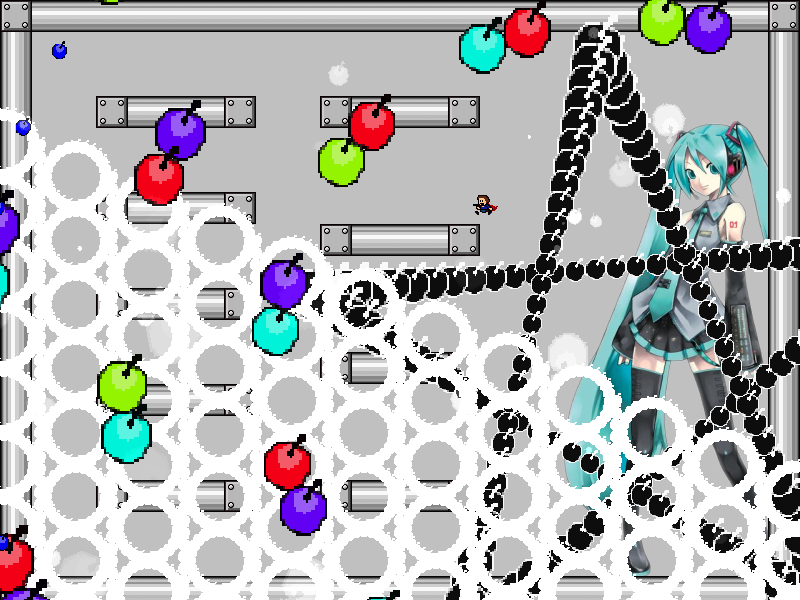

chapter4 - section4

| creator | segment | label | jump |
|---|---|---|---|
| NN | 0:44.70~0:48.10 | P/Q | double |
角度のみが一定の条件のもとランダムな弾幕です。
初音ミク右手部を中心として回転する同心円状弾幕に関して、画面外から生成される円形弾幕と合わせて回避しながら、その中心近傍に向かうことを目的としています。
角度のみがランダムであることから、飛び越える・潜り抜けるといった回避行動を取るタイミングや位置を固定化できることを利用することで攻略がしやすくなるかもしれません。
0:47.70において初音ミク右手部を中心として生成される星型弾幕（fig.4-4.1）については、半径が生成時の中心とプレイヤーとの距離を基準として決定され、また各時刻において中心からみたプレイヤーの角度に対して最も開いた形状をとります。
なお、画面外から初音ミク右手部を中心として生成される円形弾幕については、生成から80step経過後に生成時のプレイヤーの位置に重なるように射出速度が決定されます。
